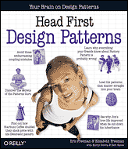

INSTRUCTOR
TEACHING ASSISTANTS (Grading Appointments in the New Computer Science Building, Room 106)
Go to the Grading Appointments Sheet to reserve a time for each assignment. Note TA-student pairings are done according to student last name so make sure you put your reservation on the correct sheet.
HOMEWORK GURUS (Office Hours in the Old Computer Science Building, Room 2217)
OFFICE HOURS GRID (in Old CS 2217)
| Start Time | End Time | MONDAY | TUESDAY | WEDNESDAY | THURSDAY | FRIDAY |
|---|
COLLEGE OF ENGINEERING TUTORING SERVICES (Engineering 236B)
Stony Brook University and the College of Engineering and Applied Sciences offers FREE tutoring services for CSE 219 in Engineering, Room 236B during the following days/times:
- Monday: TBA
- Tuesday: TBA
- Wednesday: TBA
- Thursday: TBA
- Friday: TBA
LECTURE - Section 02
Tuesdays & Thursdays
1:00 pm - 2:20 pm
Javits 103
RECITATIONS
PLATFORMS
This course will use the Java programming language, version 8. The programming environment for this semester will be the NetBeans IDE, version 8.0, which includes a syntax-directed editor, run-time environment, debugger, unit tester, and additional software development tools. Go to the NetBeans download page to get your own free copy. All software will also be provided for you to use in the Windows Lab. Note that the following references will be helpful to students while completing the Java programming assignments:
- Java 8 API - this reference provides a summary of all the Standard Edition classes, many of which we'll make use of.
- The Java Tutorial - walks one through programming in Java, including the new features of Java 8.
- JavaFX Tutorial - a good reference for learning how to make User Interfaces using JavaFX, which is new with Java 8. Note that JavaFX is replacing Swing as the Java framework for making user interfaces.
TEXTBOOKS (both are online via provided links below)
 Head First Object Oriented Design and Analysis
Head First Object Oriented Design and Analysis
by Brett McLaughlin, Gary Pollice, David West
Published by O'Reilly Media, Inc. 2006
Print ISBN-10: 0-596-00867-8
Print ISBN-13: 978-0-596-00867-3
AND
Head First Design Patterns
by Eric T Freeman, Elisabeth Robson, Bert Bates, Kathy Sierra
Published by O'Reilly Media, Inc. 2004
Print ISBN-10: 0-596-00712-4
Print ISBN-13: 978-0-596-00712-6
COURSE COMPONENTS
- Recitations - Students will attend weekly recitations that will introduce use of essential development tools and will require completion of an exercise for submission.
- Homework Assignments - Submitted code that does not compile will receive no credit. Late submissions will NOT be accepted. Programming assignments will be handed in electronically, instructions for which will be provided early in the semester.
- Midterm & Final Exams - Exams will cover all lecture and homework materials covered during the semester.
GRADING BREAKDOWN
| Recitation Exercises | 5% | |
| 5 Homework Assignments | 25 % | (5 % each) |
| Final Project | 20 % | |
| Midterm Exam | 25 % | |
| Final Exam | 25 % | |
| 100 % |
Note CEAS Policy: The Pass/No Credit (P/NC) option is not available for this course.
ACADEMIC DISHONESTY
Read This! You may discuss the homework in this course with anyone you like, however each student's submission, including written material and coding, must be his or her own work, and only his or her own work. Any evidence that written homework submissions or source code have been copied, shared, or transmitted in any way between students (this includes using source code downloaded from the Internet or written by others in previous semesters!) will be regarded as evidence of academic dishonesty. Additionally, any evidence of sharing of information or using unauthorized information during an examination will also be regarded as evidence of academic dishonesty.
The College of Engineering and Applied Sciences regards academic dishonesty as a very serious matter, and provides for substantial penalties in such cases, such as receiving an `F' grade, or expulsion from the University. For more information, obtain a copy of the CEAS guidelines on academic dishonesty from the CEAS office.
Be advised that any evidence of academic dishonesty will be treated with utmost seriousness. Those involved will be prosecuted to the fullest extent permitted by the University and College laws. If you have a situation that may tempt you into doing something academically dishonest, resist the urge and speak with your instructor during office hours for help.
SPECIAL ASSISTANCE
If you have a physical, psychological, medical or learning disability that may impact on your ability to carry out assigned course work, I would urge that you contact the staff in the Disabled Student Services office (DSS) in the ECC building (where the Computer Store used to be), 632-6748v/tdD. DSS will review your concerns and determine with you what accommodations are necessary and appropriate. All information and documentation of disability are confidential.
If you need general computer help, you can use the Computer Science Help Desk. Services offered include setting up an account on a department server, using Windows NT, using a browser, and connecting to the campus network. The Help Desk office is located in the SBCS Office - Room 2110.


Web page created and maintained
by Richard McKenna